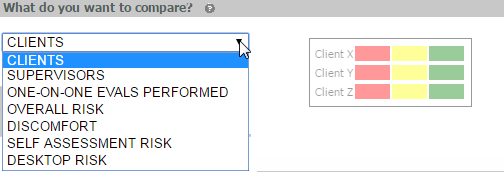
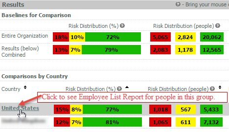
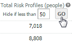
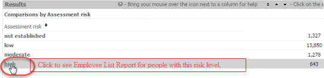
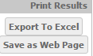

The Organization Status Report allows you to see risk breakdowns for different cross-sections of users according to HR attributes. You can compare these cross-sections against each other, and against the overall organization.
Note: This report includes any user who has generated enough information to be given a risk level, which may or may not indicate they have completed the entire OES assessment.
Select what you want to compare by selecting from the HR attributes and risk factors shown in the drop-down list. (List defaults to first attribute in list.)

For example, an Organization Status Report by Countries gives a risk distribution (high=red, moderate=yellow, low=green) for each country.

You can choose to exclude results for entries where the number specified in the Total Risk Profiles (people) column is less than you select for the "Hide if less than" box.

Click on the value in the first column to see an Employee List Report for users in that group. For example, if you are comparing by Country, clicking on the country name in the first column gives you an Employee List Report containing the users assigned to that country.
The Baselines for comparison in the first section show results for:
Entire Organization: Aggregate for entire organization (who may or may not be included in report below)
Results (below) Combined: Aggregate results for those shown in report Comparison section below.
Columns can be sorted by clicking the arrows on the column heads.
Information (columns) included in the Report:
|
Risk Distribution (%) |
% of "Total Risk Profiles (people)" for the organizational entity currently at each risk level |
|
Risk Distribution (people) |
Number of users in organizational entity currently at each risk level
|
|
No Risk Profile (people) |
Number of users assigned to the organizational entity who do not have enough OES data to calculate a risk level and who are not included in the Risk Distribution (i.e. have not gotten past the initial online assessment) |
|
Total Risk Profiles (people) |
Number of users assigned to the organizational entity who have enough OES data to calculate a risk level and who are included in the Risk Distribution (i.e. have gotten past the initial online assessment) |
|
As % of Population of Comparison Attribute |
The number on the right denotes the number of active users in the organizational entity. The % on the left is the % of population (out of active population) who are included in the Risk Distribution (i.e. have gotten past the initial online assessment) |
|
% Issue Resolution |
Percentage of Issues Resolved by people in the Risk Distribution (see Issue Frequency Report for more information)
|
You may also be able to choose to compare certain Risk and Discomfort factors (Overall Risk, Discomfort, Self Assessment Risk, Desktop Risk). Availability of one or more of these options depends on the customer's configuration.
A report by Risk or Discomfort factors gives a total number of people for each risk or discomfort level. Click the level to see an Employee List Report for people to whom this applies.

If you have Case Manager, you may also have the option to compare by evaluation type (including Type of Evaluation or Type of Evaluation & Priority).
Print/Save Options
An Organization Status Report may be printed by selecting Print Results, saved as a web page or exported to Excel by clicking one of the output buttons.
